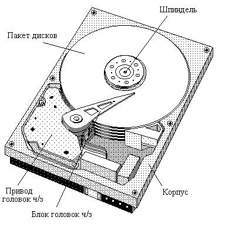

3.1. Запоминающие устройства на жестких магнитных дисках
3.1.1. Общие сведения об устройстве жестких дисковНакопители на жестких магнитных дисках (НЖМД), или в англоязычном варианте hard disk drives (HDD), являются одним из самых распространенных в настоящее время типов запоминающих устройств. Это объясняется удачным сочетанием основных их параметров: емкости, стоимости, времени обращения, габаритов и потребляемой мощности, делающим их наилучшим типом запоминающих устройств для хранения больших объемов информации, доступ к которой должен осуществляться без вспомогательных действий со стороны пользователя.
К такой информации, в первую очередь, относятся операционные системы, базы данных, документы, находящиеся в работе, постоянно или часто используемое программное обеспечение и т.п. Постоянное снижение стоимости НЖМД и увеличение их емкости приводят к проникновению их в новые приложения и сферы информационной техники.
Запись информации на магнитных носителях (не только на жестких дисках) обычно осуществляется за счет изменения состояния намагниченности отдельных участков их поверхности. Чем меньше геометрические размеры таких участков, тем большее количество информации удается записать на единице площади носителя, т.е. тем выше плотность записи информации.
3.1.1. Общие сведения об устройстве жестких дисков
Жесткие диски включают в себя электромеханическую и электронную части. Электромеханическая часть размещается в жестком корпусе, внутри которого закреплен шпиндельный двигатель с вращающимся шпинделем и смонтированными на нем дисками накопителя, а также установленный в этом же корпусе подвижный блок головок чтения/записи с приводом, обеспечивающим позиционирование (перемещение) головок. Общий вид жесткого диска со снятой крышкой корпуса показан на рис. 29.

Рис. 29. Общий вид жесткого диска со снятой крышкой корпуса
Сами диски (или пластины), которых, как правило, бывает на шпинделе от одного до пяти (иначе корпус получится очень высоким, а шпиндель с дисками - тяжелым), изготовлены из сплавов алюминия или специального стекла (иногда керамики). Последнее используется при высоких скоростях вращения шпинделя. Поверхность дисков имеет магнитное покрытие, на котором, собственно, и записывается информация. Процесс записи состоит в локальных изменениях магнитного состояния этого покрытия.
Информация на диске располагается по окружностям, называемым дорожками (см. рис.2, п.1.1), совокупность равноудаленных от центра дорожек поверхностей всех пластин НЖМД называют цилиндром.
Дорожки для хранения информации разбиты на секторы, емкость которых в большинстве случаев составляет 512 байт. Сектор обладает определенной структурой, включающей в себя заголовок, поле данных и контрольный код этого поля.
Часть корпуса, в которую заключена электромеханика диска, часто называют герметичной (хотя обычно имеется защищенное воздушным фильтром отверстие для выравнивания внутреннего давления с атмосферным), поскольку в ней не допускается присутствие никаких загрязнений, в том числе частичек пыли. Необходимость этого вызвана тем, что головки чтения/записи находятся на очень малом расстоянии от поверхности диска (порядка 10-4-10-5 мм), удерживаясь над ней воздушным потоком (нетрудно подсчитать, что линейная скорость перемещения диска относительно головок на внешних цилиндрах составляет более 100 км/час при скорости вращения 7200 об/мин). Поэтому даже небольшие частицы могут легко повредить магнитное покрытие. Для частиц, которые образуются в процессе эксплуатации за счет износа поверхностей, внутри корпуса существует даже некое подобие пылесоса: рециркуляционный фильтр.
В электронную часть диска входят контроллер, усилители сигналов интерфейсных шин и буферная память (кэш диска). Контроллер обеспечивает управление процессами разгона и останова шпинделя, позиционирования головок, чтения и записи информации, а также внешний интерфейс диска.
Привод позиционирования головок чтения/записи чаще всего поворотный (для получения меньших его размеров) электромагнитный, с подвижной катушкой, перемещающейся в магнитном поле постоянного магнита под действием протекающего по ней тока. Направление и сила тока определяют направление и скорость перемещения катушки и механически связанных с ней головок чтения/записи.
После установки на требуемый цилиндр головки удерживаются на нем с помощью следящей системы, считывающей с диска специальные сервометки. Эти метки записаны на диске либо в специальных местах информационных дорожек, либо на служебных серводорожках, расположенных между основными, либо реже на специально выделенной поверхности диска. Понятно, что требования обеспечения работы системы позиционирования и приводят к тому, что поперечная плотность записи данных существенно меньше продольной. Сервометки также используются для поддержания постоянной скорости вращения диска.
Время позиционирования на требуемую дорожку зависит, как отмечалось, от расстояния до нее от текущего положения головок чтения/записи. Минимальное время затрачивается на переход к соседнему цилиндру. Но и переход с дорожки на дорожку в пределах одного цилиндра по времени близок к переходу на дорожку соседнего цилиндра (порядка 1 - 2 мс), так как система позиционирования даже при переключении дорожек в пределах цилиндра все равно должна выверить точность установки головок.
Удержание головок на требуемой дорожке при чтении или записи является весьма непростой инженерной задачей. Влияние вибрации вращающегося диска, температурные расширения, механические напряжения, воздушный поток и другие факторы учитываются с помощью специальных приемов и алгоритмов (sic!).
Запись и считывание информации с магнитного слоя (на основе оксидов железа или хрома), покрывающего пластину диска, осуществляется с помощью головок чтения/записи, которые в современных дисках обычно комбинированные: для записи используется электромагнитные, а для чтения - магнитно-резистивные головки.
Как правило, изготовить идеальный магнитный слой в процессе производства не удается и на нем имеются дефектные участки. Соответствующие им секторы не могут использоваться для хранения данных и должны быть заблокированы. Информация о них хранится в специальной таблице.
Обнаруженные при контроле после изготовления плохие секторы просто пропускаются при нумерации (и тем самым при доступе), но номера секторов, пришедших в негодность в процессе эксплуатации, переназначаются на имеющееся на диске запасное место. Такие секторы называют перемещенными (или remapped - переназначенными), а их количество на диске можно прочитать специальными утилитами. (На хорошем новом диске таких секторов быть не должно.) Поскольку эти секторы оказываются на определенном удалении от секторов с соседними номерами (адресами), то обращение к ним приводит к задержкам при чтении и записи по последовательным адресам, что заметно, например, на графиках скорости чтения в виде длинной "бороды" - провалов в скорости считывания данных.
Магнитные свойства носителя и самих головок, используемый метод записи, расстояние от головок до поверхности диска, скорость вращения диска и ряд других параметров определяют максимальную плотность записи информации, при которой будет обеспечена требуемая надежность работы накопителя.
Собственно говоря, чисто физические сбои при чтении и записи данных происходят относительно часто: (по паспортным данным дисков фирмы IBM) при чтении теряется 1 бит из 1013 прочитанных битов. На скорости передачи 700 Мбит/с (см. п. 1.1) сбои в среднем будут происходить примерно 1 раз в четыре часа. Понятно, что при такой частоте сбоев нормально работать нельзя. Спасает положение использование контрольных (корректирующих) кодов. Например, корректирующий код (Error Correcting Code) в дисках той же фирмы обеспечивает обнаружение до 12 неверных байтов в секторе.
Для предупреждения потери данных в случае выхода диска из строя его контроллер, как правило, осуществляет специальный мониторинг состояния диска, фиксируя изменение таких его параметров, как частота ошибок чтения данных, время разгона шпинделя до номинальной скорости вращения, количество перемещенных секторов, частота ошибок позиционирования головок ч/з, общее количество отработанных часов и др. На основании анализа изменения этих параметров с течением времени контроллер, оснащенный такими средствами, названными SMART (Self-Monitoring, Analyzing and Reporting Technology - технология самодиагностики, анализа и оповещения) технологией, может предсказать предположительное время выхода диска из строя.